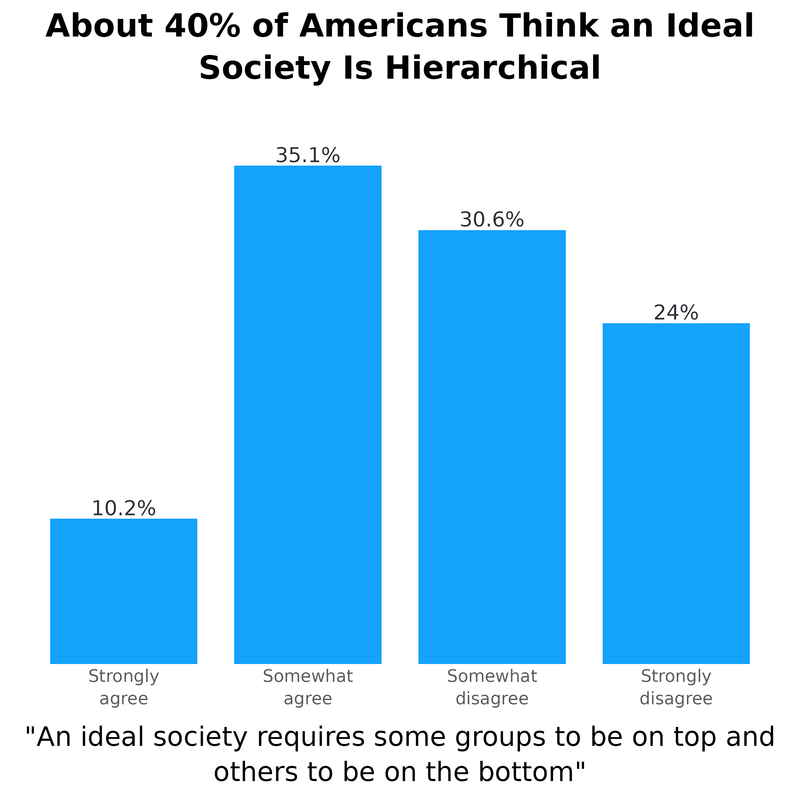

How to Use the `adl_bar_plots` function
Source:vignettes/how_to_use_adl_bar_plot.Rmd
how_to_use_adl_bar_plot.Rmd
library(adlgraphs)
library(dplyr)
library(ggplot2)
library(stringr)
library(forcats)
library(haven)
library(labelled)
library(glue)
library(ggtext)At CAR, our data visualization often consists of creating bar plots. These can be stacked bar plots or dodged/grouped bar plots, horizontally or vertically oriented, and with or without confidence intervals. While bar plots may not be the flashiest of graphs, they are really valuable due to the ease at which they convey information, the amount of information they can convey, and the fact that most people know how to read them.
This tutorial is comprised of two parts and will likely be updated periodically over time:
The first part consists of a data visualization and style guide as it relates to creating bar plots so that they are consistent with CAR’s style.
The second part demonstrates how to use various functions from the
adlgraphspackage to make creating bar plots easier.
CAR’s bar plot data visualization and style guide
Some general rules that apply to all bar plots:
The title ought to be no more than two lines and ought to be the main takeaway of the plot.
Subtitle can convey additional information not available in the rest of the plot. For example, it can help clarify what it is the plot is demonstrating.
Use exact question labeling whenever possible. This is most often used in the axis labels but can be in title.
The data point the bar is demonstrating should be directly labelled either inside or outside the bar.
Don’t include grid lines. They are unnecessary since the labels are already labelled.
Don’t label axes if not necessary.
When it comes to deciding the direction of the plot, just use your judgement on what looks best. All plots used on the website require a width of 1080px so if you are only comparing two bars, it may be better to just make it horizontal. However, it’s important to keep the aesthetic consistent throughout a report or presentation. For instance, if you are regularly using vertical bar plots, keep using that even if some might look a little better horizontally. The change in orientation may confuse readers and think it is demonstrating something different.
Simple bar plots
Simple bar plots are ones in which we are only comparing two variables, the x and y axis variables. We use these for both demonstrating frequencies as well as means. Additionally, they can be vertical or horizontal.
Now let’s look at these in action. Below is a simple vertical frequency plot. While this doesn’t have a subtitle, the rest of what is written above still applies. Each bar is directly labelled with the percentage.
There aren’t any grid lines since the bars are labelled directly
The plot title contains the main takeaway (or a main takeaway)
The y-axis title is not labeled since the columns are already labeled with data and % symbols.
The x-axis title is the exact question wording.
Each column is directly labeled outside the bar with the data value it represents and the % symbol.
Lastly, the order of the bars is not reordered by percentage since the values of the x-axis already have an inherent order. Furthermore, “Strongly disagree” appears on the far left and “Strongly agree” appears on the far right. (Note: If the values of the x-axis were to not have a specific order to them, then we would reorder them by percentage.)

Now let’s take a look at two simple vertical mean plots. The plot on the left shows the average score on the “American Conspiracy Thinking Scale” across educational groups. The American Conspiracy Thinking Scale shows the average response score across four statements. The plot on the right shows the average number of tropes endorsed from the ADL Index.
Both plots show the data label inside at the bottom of the bar, with white surrounding the number to improve visibility
Both plots have confidence intervals demonstrating statistical significance
The plot on the right does not have the y-axis labelled. This is because one of the bars has “Tropes Endorsed” inside of it which tells people what the numbers mean. This ideal for when showing something easy, like average number of actions, statements, tropes, etc.


Now let’s take a look at a relatively simple horizontal bar plot. The same principles laid out previously apply here as well, however, there are some differences. For example, take the plot below. Here we are looking at the percentage of people from each education level who agree with a specific statement. Normally we would show this as a stacked plot with all response options, but occasionally we want something simpler. While this graph could be vertical, it is easier to read if done horizontally. Namely, people don’t have to turn their head to read the axes. Some notes:
When frequency plots are horizontal, the percentage labels go outside the columns to the right.
Again, the x-axis is not reordered because educational levels have an inherent order to them. However, if this were something without an inherent order, like race/ethnicity, we would reorder the columns based on the percentage so the top bar is highest and the bottom bar is lowest.
The y-axis does not have a title because it is obvious we are looking at education levels. This concept applies to other demographic groups. Only include titles if necessary.
While not super necessary, this graph has wrapped the y-axis labels (there are line breaks), this makes the graph look more symmetrical and keeps the x-axis title more centered. If adding line breaks try to keep them to three maximum whenever possible.
The x-axis is title is added to clarify what it is we are looking it.

Dodged bar plots
We don’t use dodged bar plots too frequently, but it is important to understand what to do if we do use them. We use dodged bar plots to demonstrate frequencies as well as mean plots. A typical example would be to compare the level of agreement with various statements among different groups of people. In this example, we’ll look at how people with and without a college degree differ in how much they agree with a few statements designed to measure conspiratorial mindset. The two images below show the same graph but one uses a legend to identify which group is associated with which bar and the other uses colored text in the title to identify the groups.
Coloring text in the title or subtitle to indicate the groups associated with the bars is typically better than including a legend as it makes the plot less cluttered.
If using a legend, make sure that it is aligned with the direction of the bars and in the same order. We can see this in the left plot below. Since the plot is horizontal and the bars are above each other, the legend is to the right and the legend items are on top of each other. Furthermore, the order of the legend items are in the same order as the bars.
Another note: Since these statements were a bit long, we made the plot horizontal and wrapped them ove three lines. Typically, anything more than two or three words will be made into a horizontal bar plot. As it relates to wrapping the text, use your judgement. Make sure the text is easy to read, doesn’t overlap with each other, and the relative sizes of the bars is easy to see.


Occasionally, we also do vertically dodged bar plots. As I mentioned above, we’ll use these when the axis labels are not large. For example, comparing the percentage of people endorsing different numbers of tropes/statements. Another example, comparing the average score for two measures across a group. I’ll demonstrate both examples below.
test_data %>%
mutate(acts_avg = structure(acts_avg, label = "American Conspiracy Thinking Scale")) %>%
pivot_longer_values(
cols = c(acts_avg, sdo_avg),
names_to = "variables",
values_to = "score"
)
#> # A tibble: 500 × 28
#> resp_id wts edu edu_f2 pid_f3 top inferior dominate deserving
#> <int> <dbl> <dbl+lbl> <fct> <dbl+l> <dbl+l> <dbl+lb> <dbl+lb> <dbl+lbl>
#> 1 1 0.937 4 [Bachelor… At Le… 1 [Dem… 4 [Str… 4 [Stro… 1 [Stro… 1 [Stron…
#> 2 1 0.937 4 [Bachelor… At Le… 1 [Dem… 4 [Str… 4 [Stro… 1 [Stro… 1 [Stron…
#> 3 2 0.303 5 [Graduate… At Le… 2 [Ind… 3 [Som… 3 [Some… 3 [Some… 3 [Somew…
#> 4 2 0.303 5 [Graduate… At Le… 2 [Ind… 3 [Som… 3 [Some… 3 [Some… 3 [Somew…
#> 5 3 0.937 4 [Bachelor… At Le… 1 [Dem… 2 [Som… 3 [Some… 2 [Some… 2 [Somew…
#> 6 3 0.937 4 [Bachelor… At Le… 1 [Dem… 2 [Som… 3 [Some… 2 [Some… 2 [Somew…
#> 7 4 0.408 3 [Some Col… No Co… 2 [Ind… 4 [Str… 3 [Some… 1 [Stro… 1 [Stron…
#> 8 4 0.408 3 [Some Col… No Co… 2 [Ind… 4 [Str… 3 [Some… 1 [Stro… 1 [Stron…
#> 9 5 0.627 5 [Graduate… At Le… 3 [Rep… 4 [Str… 4 [Stro… 1 [Stro… 1 [Stron…
#> 10 5 0.627 5 [Graduate… At Le… 3 [Rep… 4 [Str… 4 [Stro… 1 [Stro… 1 [Stron…
#> # ℹ 490 more rows
#> # ℹ 19 more variables: special <dbl+lbl>, harder <dbl+lbl>,
#> # controlled <dbl+lbl>, small <dbl+lbl>, run <dbl+lbl>, big_events <dbl+lbl>,
#> # accept_hamas <dbl+lbl>, accept_isr <dbl+lbl>, dislike_jews <dbl+lbl>,
#> # stick_together <dbl+lbl>, values <dbl+lbl>, head <dbl+lbl>,
#> # loyal <dbl+lbl>, business_power <dbl+lbl>, wall_street <dbl+lbl>,
#> # trad_n <dbl>, edu_f <fct>, variables <chr+lbl>, score <dbl>